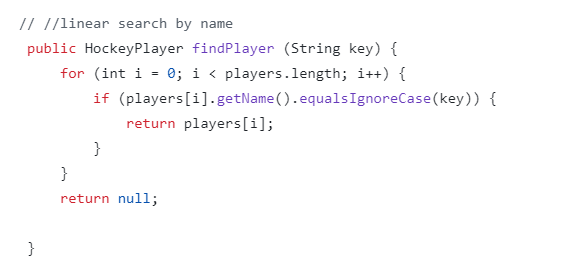
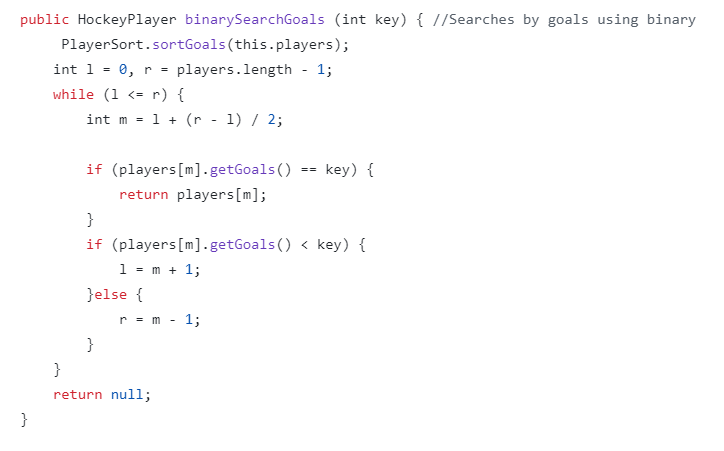

Linear or sequential search is slow but works on any array. It iterates through the array until the current element equals the element being searched for. Then, it returns the index of said element.
Here is an example of Java implementation of a linear search, being used to search through an array of players by name.

Binary search involves repeatedly cutting an array in half until the element is found. The top half is discarded if the middle element is greater than the target element. On the other hand, if the middle element is smaller than the target element, the bottom half is discarded. This method is faster than a linear search. However, it only works on a sorted array.
Here is an example of Java implementation of a binary search, being used to search through an array of players by goals.
